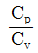
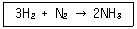
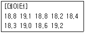
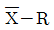

가스기능장 (2018-03-31 기출문제)
1과목: 임의 구분
1. Dalton의 법칙에 대한 설명으로 옳지 않은 것은?
- 모든 기체에 대해 정확히 성립한다.
- 혼합기체의 전압은 각 기체의 분압의 합과 같다.
- 실제기체의 경우 낮은 압력에서 적용할 수 있다.
- 한 기체의 분압과 전압의 비는 그 기체의 몰수와 전체 몰수의 비와 같다.
(정답률: 64%)

2. 완전가스의 비열비(specific heat ratio)에 대한 설명중 틀린 것은?
- 비열비 k는

로 나타낸다. - 비열비는 온도에 관계없이 일정하다.
- 공기의 비열비는 1.4 정도이다.
- 단원자보다 3원자 분자 이상 기체의 비열비가 크다.
(정답률: 53%)
3. 열역학 제2법칙에 대한 설명으로 옳은 것은?
- 일을 소비하지 않고 열을 저온체에서 고온체로 이동시키는 것은 불가능하다.
- 열이 높은 쪽에서 낮은 쪽으로 이동하여 마침내 온도의 차가 없는 열평형을 이룬다.
- 온도가 일정한 조건에서 기체의 체적은 압력에 반비례한다.
- 절대온도 0도에서는 엔트로피도 0이다.
(정답률: 53%)
4. 이상기체 n몰에 대한 상태방정식으로 가장 옳은 것은?
- PV=RT
- PV=nRT
- PV=R
- V/T=R
(정답률: 71%)
5. 산화에틸렌에 대한 설명으로 가장 거리가 먼 것은?
- 폭발범위는 약 3.0~80[%] 이다.
- 공업적 제법으로는 에틸렌을 산소로 산화해서 합성 한다.
- 액체 상태에서 열이나 충격 등으로 폭약과 같이 폭발을 일으킨다.
- 철, 주석, 알루미늄의 무수염화물, 산ㆍ알칼리, 산화 알루미늄 등에 의하여 중합 발열한다.
(정답률: 47%)
6. 다음 각 가스의 성질에 대한 설명 중 옳지 않은 것은?
- 일산화탄소는 독성가스이고, 또한 가연성가스이다.
- 암모니아는 산이나 할로겐과 잘 화합하고 고온, 고압에서는 강재를 침식한다.
- 산소는 반응성이 강한 가스로서 가연성 물질을 연소시키는 조연성(助然性)이 있다.
- 질소는 안정한 가스로서 불활성 가스라고도 하는데 고온하에서도 금속과 화합하지 않는다.
(정답률: 57%)
7. 포스겐(COCl2)가스를 검지할 수 있는 시험지는?
- 리트머스시험지
- 염화파라듐지
- 하리슨시험지
- 연당지
(정답률: 60%)
8. 다음 중 중합폭발을 일으키는 가스는?
- 오존
- 시안화수소
- 아세틸렌
- 히드라진
(정답률: 57%)
9. 1[torr]는 약 몇 [Pa] 인가?
- 14.5
- 133.3
- 750.0
- 760.0
(정답률: 59%)
10. 어떤 기체 100[mL]를 취해서 가스분석기에서 CO2를 흡수시킨 후 남은 기체는 88[mL]이며, 다시 O2를 흡수시켰더니 54[mL]가 되었다. 여기서 다시 CO를 흡수시키니 50[mL]가 남았다. 잔존 기체가 질소일 때 이 시료기체 중 O2의 용적백분율[%]은?
- 34[%]
- 38[%]
- 46[%]
- 50[%]
(정답률: 44%)
11. 같은 조건에서 수소의 확산속도는 산소의 확산속도보다 몇 배가 빠른가?
- 2
- 4
- 8
- 16
(정답률: 55%)
12. 다음 중 화학 친화력을 나타내는 것으로서 가장 적절한 것은?
- △H
- △G
- △S
- △U
(정답률: 58%)
13. 다음 중 가연성이면서 독성가스인 것은?
- 산화에틸렌
- 아황산가스
- 프로판
- 염소
(정답률: 55%)
14. 이상기체 상태방정식에서 기체상수(R)값을 [J/gmolㆍK]의 단위로 나타낸 것은?
- 0.082
- 1.987
- 8.314
- 848
(정답률: 59%)
15. 3단 압축기에서 2단 토출도관의 안전밸브가 열렸다. 가장 먼저 점검해야 할 곳은?
- 1단 압축기의 토출밸브
- 2단 압축기의 흡입밸브
- 2단 압축기의 토출밸브
- 3단 압축기의 흡입밸브
(정답률: 52%)
16. 비철금속 중 구리관 및 구리합금관의 특징에 대한 설명 중 틀린 것은?
- 황산 등의 산화성 산에 의해 부식된다.
- 알칼리의 수용액과 유기화합물에 내식성이 강하다.
- 산화제를 함유한 암모니아수에 의해 부식된다.
- 연수에 대하여 내식성은 크나 담수에는 부식된다.
(정답률: 57%)
17. 배관의 수직 방향에 의하여 발생하는 압력손실을 계산하려고 할 때 반드시 고려되어야 하는 것은?
- 입상 높이, 가스 비중
- 가스 유량, 가스 비중
- 가스 유량, 입상 높이
- 관 길이, 입상 높이
(정답률: 59%)
18. 역화방지장치를 반드시 설치하여야 할 위치가 아닌것은?
- 아세틸렌 충전용 지관
- 아세틸렌의 고압건조기와 충전용교체밸브 사이의 배관
- 가연성가스를 압축하는 압축기와 오토클레이브와의 사이의 배관
- 아세틸렌을 압축하는 압축기의 유분리기와 고압건조기와의 사이
(정답률: 53%)
19. 다음 중 개스켓의 소재가 아닌 것은?
- 고무류
- 오일류
- 섬유류
- 금속류
(정답률: 59%)
20. 배관에서 지름이 다른 관을 연결하는데 주로 사용하는 것은?
- 플러그
- 리듀서
- 플랜지
- 캡
(정답률: 64%)
2과목: 임의 구분
21. 순수한 수소와 질소를 고온, 고압에서 다음의 반응에 의해 암모니아를 제조한다. 반응기에서의 수소의 전화율은 10[%]이고, 수소는 30[kmol/s], 질소는 20[kmol/s]로 도입될 때 반응기에서의 배출되는 질소의 양은 몇 [kmol/s] 인가?

- 3
- 19
- 27
- 37
(정답률: 46%)
22. 석유를 분해해서 얻은 수소와 공기를 분리하여 얻은 질소를 반응시켜 제조할 수 있는 것은?
- 프로필렌
- 황화수소
- 아세틸렌
- 암모니아
(정답률: 58%)
23. 배관의 이음방법 중 플랜지를 접합하는 방법이 아닌 것은?
- 나사식
- 노허브식
- 블라인드식
- 소켓용접식
(정답률: 55%)
24. 가스시설의 전기 방식(防蝕)에 대한 설명으로 틀린것은?
- 직류 전철 등에 의한 영향이 없는 경우에는 외부전원법 또는 희생양극법으로 한다.
- 직류 전철 등의 영향을 받는 배관에는 배류법으로 한다.
- 전위측정용 터미널은 희생양극법에 의한 배관에는 300[m] 이내의 간격으로 설치한다.
- 전위측정용 터미널은 외부전원법에 의한 배관에는 300[m] 이내의 간격으로 설치한다.
(정답률: 54%)
25. 고압가스를 취급하였을 때 다음 중 가장 위험하지 않은 경우는?
- 산소 10[%]를 함유한 CH4를 10.0[MPa]까지 압축하였다.
- 산소 제조장치를 공기로 치환하지 않고 용접 수리 하였다.
- 수분을 함유한 염소를 진한 황산으로 세척하여 고압용기에 충전하였다.
- 시안화수소를 고압용기에 충전하는 경우 수분을 안정제로 첨가하였다.
(정답률: 54%)
26. 산소압축기에 대한 설명으로 가장 거리가 먼 것은?
- 제조된 산소를 용기에 충전하는 목적에 쓰인다.
- 윤활제로는 기름 또는 10[%] 이하의 묽은 글리세린수를 사용한다.
- 압축기와 충전용기 주관에는 수분리기(drainseparator)를 설치한다.
- 최근에는 산소압축기에 래비런스피스톤을 사용하는 무급유를 작동한다.
(정답률: 56%)
27. 가스액화 분리장치의 구성기기 중 축냉기의 축냉체로 주로 사용되는 것은?
- 구리
- 물
- 공기
- 자갈
(정답률: 53%)
28. 공기를 압축하여 냉각시키면 액화된다. 다음 중 옳은 설명은?
- 질소가 먼저 액화한다.
- 산소가 먼저 액화한다.
- 산소와 질소가 동시에 액화된다.
- 산소와 질소의 액화 온도 차이는 약 50[℃] 정도이다.
(정답률: 56%)
29. 압축기의 흡입 및 토출밸브의 구비조건으로 가장 옳은 것은?
- 개폐의 지연이 있어야 좋다.
- 통과 면적은 작고, 유체저항은 커야 한다.
- 개폐의 지연이 없고 작동이 양호해야 한다.
- 압축기의 기동 중에도 분해 조립할 수 있어야 한다.
(정답률: 59%)
30. 터보형 압축기의 특징에 대한 설명 중 틀린 것은?
- 압축비가 크고, 용량조정범위가 넓다.
- 비교적 소형이며, 대용량에 적합하다.
- 연소토출이 되므로 맥동현상이 적다.
- 전동기의 회전축에 직결하여 구동할 수 있다.
(정답률: 50%)
31. 다음 중 냉매배관용 밸브가 아닌 것은?
- 팩드밸브
- 팩리스밸브
- 플랩밸브
- 플로트밸브
(정답률: 47%)
32. 전기 방식(防蝕) 중 외부전원법에 사용되는 정류기가 아닌 것은?
- 정전류형
- 정전압형
- 정저항형
- 정전위형
(정답률: 58%)
33. 두 축의 축선이 약간의 각을 이루어 교차하고, 그 사이의 각도가 운전 중에 다소 변하더라도 자유롭게 운동을 전달할 수 있는 이음은?
- 기어 이음(gear joint)
- 머프 커플링(muff coupling)
- 플랜지 커플링(flange coupling)
- 유니버설 조인트(universal joint)
(정답률: 59%)
34. NH3의 냉매번호는 R-717 이다. 백단위의 7은 무기 물질을 뜻하는데 그 뒤 숫자 17은 냉매의 무엇을 뜻 하는가?
- 냉동계수
- 증발잠열
- 분자량
- 폭발성
(정답률: 60%)
35. 차량에 고정된 고압가스 용기 운반 시 운반책임자를 반드시 동승시켜야 하는 경우는? (단, 독성가스는 허용농도가 100만분의 1000인 가스이다.)
- 압축가스 중 용적이 400[m3]인 산소
- 압축가스 중 용적이 50[m3]인 독성가스
- 액화가스 중 질량이 2000[kg]인 프로판가스
- 액화가스 중 질량이 2000[kg]인 독성가스
(정답률: 53%)
36. 가연성가스 또는 독성가스를 충전하는 차량에 고정된 탱크 및 용기에는 안전밸브가 부착되어야 한다. 그 성능기준으로 옳은 것은?
- 내압시험압력의 10분의 6 이하의 압력에서 작동할 수 있는 것일 것
- 내압시험압력의 10분의 7 이하의 압력에서 작동할 수 있는 것일 것
- 내압시험압력의 10분의 8 이하의 압력에서 작동할 수 있는 것일 것
- 내압시험압력의 10분의 9 이하의 압력에서 작동할 수 있는 것일 것
(정답률: 55%)
37. 도시가스를 사용하는 공동주택 등에 압력조정기를 설치할 수 있는 경우의 기준으로 옳은 것은?
- 공동주택 등에 공급되는 가스압력이 중압 이상으로서 전체 세대수가 150세대 미만인 경우
- 공동주택 등에 공급되는 가스압력이 중압 이상으로서 전체 세대수가 200세대 미만인 경우
- 공동주택 등에 공급되는 가스압력이 저압으로서 전체 세대수가 200세대 미만인 경우
- 공동주택 등에 공급되는 가스압력이 저압으로서 전체 세대수가 300세대 미만인 경우
(정답률: 51%)
38. 고압가스 일반 제조시설에서 저장탱크의 가스방출 장치는 몇 [m3] 이상의 가스를 저장하는 곳에 설치하여야 하는가?
- 3[m3]
- 5[m3]
- 7[m3]
- 10[m3]
(정답률: 50%)
39. 고압가스 운반차량의 기준에서 용기 주밸브, 긴급 차단장치에 속하는 밸브 그 밖의 중요한 부속품이 돌출된 저장탱크는 그 부속품을 차량의 좌측면이 아닌 곳에 설치한 단단한 조작상자 내에 설치한다. 이 경우 조작상자와 차량의 뒷범퍼와는 수평거리로 얼마 이상을 이격하여야 하는가?
- 20[cm]
- 30[cm]
- 40[cm]
- 60[cm]
(정답률: 45%)
40. 고압가스 냉동제조시설에서 항상 물에 접촉되는 부분에 사용할 수 없도록 규정된 재료는?
- 순도 61[%] 미만의 동합금
- 순도 61[%] 미만의 마그네슘
- 순도 99.7[%] 미만의 청동
- 순도 99.7[%] 미만의 알루미늄
(정답률: 52%)
3과목: 임의 구분
41. 가연성가스 저온저장탱크에서 내부의 압력이 외부의 압력보다 낮아져 저장탱크가 파괴되는 것을 방지하기 위한 조치로서 적당하지 않은 것은?
- 압력계를 설치한다.
- 압력경보설비를 설치한다.
- 진공안전밸브를 설치한다.
- 압력방출밸브를 설치한다.
(정답률: 52%)
42. 다음 고압가스 중 상용 온도에서 그 압력이 0.2[MPa] 이상이 되어야 고압가스 범위에 해당하는 것은?
- 액화 시안화수소
- 액화 브롬화메탄
- 액화 산화에틸렌
- 액화 산소
(정답률: 41%)
43. 에어졸 제조기준에 대한 설명으로 틀린 것은?
- 내용적이 100[cm3]를 초과하는 용기는 그 용기제조자의 명칭 또는 기호가 표시되어 있어야 한다.
- 에어졸 충전용기 저장소는 인화성 물질과 8[m] 이상의 우회거리를 유지한다.
- 내용적이 30[cm3] 이상인 용기는 에어졸 제조에 재 사용하지 아니한다.
- 40[℃]에서 용기 안의 가스압력의 1.5배의 압력을 가할 때 파열되지 아니하여야 한다.
(정답률: 43%)
44. 가스공급시설 중 최고사용압력이 고압인 가스홀더 2개가 있다. 2개의 가스홀더의 지름이 각각 20[m], 40[m]일 경우 두 가스홀더의 간격은 몇 [m] 이상을 유지하여야 하는가?
- 10[m]
- 15[m]
- 20[m]
- 30[m]
(정답률: 48%)
45. 흡수식 냉동설비의 냉동능력 정의로 옳은 것은?
- 발생기를 가열하는 24시간의 입열량 6천 640[kcal]를 1일의 냉동능력 1[톤]으로 본다.
- 발생기를 가열하는 1시간의 입열량 3천 320[kcal]를 1일의 냉동능력 1[톤]으로 본다.
- 발생기를 가열하는 1시간의 입열량 6천 640[kcal]를 1일의 냉동능력 1[톤]으로 본다.
- 발생기를 가열하는 24시간의 입열량 3천 320[kcal]를 1일의 냉동능력 1[톤]으로 본다.
(정답률: 50%)
46. 액화석유가스 저장탱크를 지상에 설치하는 경우 냉각살수 장치를 설치하여야 한다. 구형저장탱크에 설치하여야 하는 살수장치는?
- 살수관식
- 확산판식
- 노즐식
- 분무관식
(정답률: 51%)
47. 고압가스 시설에 설치하는 방호벽의 높이와 두께로 옳은 것은?
- 높이 1.5[m] 이상, 두께 10[cm] 이상의 철근 콘크리트 벽
- 높이 1.5[m] 이상, 두께 12[cm] 이상의 철근 콘크리트 벽
- 높이 2[m] 이상, 두께 10[cm] 이상의 철근 콘크리트 벽
- 높이 2[m] 이상, 두께 12[cm] 이상의 철근 콘크리트 벽
(정답률: 48%)
48. 액화석유가스 저장탱크의 설치에 대한 설명으로 옳지 않은 것은?
- 지상에 설치하는 저장탱크 및 지주는 내열성의 구조로 한다.
- 저장탱크 외면으로부터 2[m] 이상 떨어진 위치에서 조작할 수 있는 냉각장치를 한다.
- 지지구조물과 기초는 지진에 견딜 수 있도록 설계한다.
- 저장탱크 외면에는 부식방지 조치를 한다.
(정답률: 48%)
49. 액화천연가스의 저장설비 및 처리설비는 그 외면으로부터 사업소 경계까지 일정 규모 이상의 안전거리를 유지하여야 한다. 이때 사업소 경계가 ( )의 경우에는 이들의 반대편 끝을 경계로 보고 있다. ( )에 들어갈 수 있는 경우로 적합하지 않은 것은?
- 산
- 호수
- 하천
- 바다
(정답률: 57%)
50. 액화석유가스의 안전관리 및 사업법에서 규정하고 있는 안전관리자의 직무범위가 아닌 것은?
- 회사의 가스영업 활동
- 가스용품의 제조공정 관리
- 사업소의 종업원에 대한 안전관리를 위하여 필요한 사항의 지휘ㆍ감독
- 정기검사 및 수시검사 결과 부적합 판정을 받은 시설의 개선
(정답률: 59%)
51. 도시가스사업법의 목적에 포함되지 않는 것은?
- 공공의 안전을 확보
- 도시가스 사용자의 이익을 보호
- 도시가스 사업을 합리적으로 조정, 육성
- 가스 품질의 향상과 국가 기간산업의 발전을 도모
(정답률: 49%)
52. 액화석유가스 소형 저장탱크의 설치기준에 대한 설명 중 옳은 것은?
- 충전질량이 2000[kg] 이상인 것은 탱크간 거리를 1[m] 이상으로 하여야 한다.
- 동일 장소에 설치하는 탱크의 수는 6기 이하로 하고 충전질량 합계는 6000[kg] 미만이 되도록 하여야한다.
- 충전질량 1000[kg] 이상인 탱크는 높이 1[m] 이상의 경계책을 만들고 출입구를 설치하여야 한다.
- 소형 저장탱크는 그 바닥이 지면보다 10[cm] 이상 높게 설치된 콘크리트 바닥 등에 설치하여야 한다.
(정답률: 38%)
53. 고압가스 취급소 등에서 폭발 및 화재의 원인이 되는 발화원으로 가장 거리가 먼 것은?
- 충격
- 마찰
- 방전
- 접지
(정답률: 58%)
54. 지하에 매몰할 수 없는 배관은?
- 도시가스용 탄소강관
- 가스용 폴리에틸렌관
- 폴리에틸렌 피복강관
- 분말 용착식 폴리에틸렌 피복강관
(정답률: 52%)
55. 전수검사와 샘플링검사에 관한 설명으로 맞는 것은?
- 파괴검사의 경우에는 전수검사를 적용한다.
- 검사항목이 많을 경우 전수검사보다 샘플링검사가 유리하다.
- 샘플링검사는 부적합품이 섞여 들어가서는 안 되는 경우에 적합하다.
- 생산자에게 품질향상의 자극을 주고 싶을 경우 전수검사가 샘플링검사보다 더 효과적이다.
(정답률: 56%)
56. 다음 데이터의 제곱합(sum of squares)은 약 얼마인가?

- 0.129
- 0.338
- 0.359
- 1.029
(정답률: 38%)
57. Ralph M. Barnes 교수가 제시한 동작경제의 원칙 중 작업장 배치에 관한 원칙(arrangement of the workplace)에 해당되지 않는 것은?
- 가급적이면 낙하식 운반방법을 이용한다.
- 모든 공구나 재료는 지정된 위치에 있도록 한다.
- 적절한 조명을 하여 작업자가 잘 보면서 작업할 수 있도록 한다.
- 가급적 용이하고 자연스런 리듬을 타고 일할 수 있도록 작업을 구성하여야 한다.
(정답률: 52%)
58. 직물, 금속, 유리 등의 일정 단위 중 나타나는 흠의 수, 핀홀 수 등 부적합수에 관한 관리도를 작성하려면 가장 적합한 관리도는?
- c 관리도
- np 관리도
- p 관리도

관리도
(정답률: 47%)
59. 국제 표준화의 의의를 지적한 설명 중 직접적인 효과로 보기 어려운 것은?
- 국제간 규격통일로 상호 이익도모
- KS 표시품 수출 시 상대국에서 품질인증
- 개발도상국에 대한 기술개발의 촉진을 유도
- 국가 간의 규격상이로 인한 무역장벽의 제거
(정답률: 51%)
60. 어떤 회사의 매출액이 80000원, 고정비가 15000원, 변동비가 40000원일 때 손익분기점 매출액은 얼마인가?
- 25000원
- 30000원
- 40000원
- 55000원
(정답률: 47%)